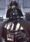

De: La Frikipedia, la enciclopedia extremadamente seria.
De: La Frikipedia, la enciclopedia extremadamente seria. De: La Frikipedia, la enciclopedia extremadamente seria.
«El, el, el, el... el elefan, elef, ele, el el elefante... »
~ Un tartamudo intentando decir algo

Él, también conocido como Aquel o Ése, es un ser del Inframundo que se interpone entre Yo y Tú.
Etimológicamente proviene del ruso "он".
Siempre es alguien diferente, de hecho, eres tú mismo cuando alguien habla de ti
Lingüísticamente casi siempre se encuentra de tercero, después de tú y antes de nosotros.
Físicamente es extremadamente difícil localizarlo, específicamente cuando le preguntas a alguien dónde está "él", las personas suelen responder ¿Quién?, y por más se les explique nunca saben quién es él.
Una vez localizado se transforma, pues al preguntarle: ¿cómo estás?, ya deja de ser él, pues ahora es un tú. Por eso se dice que él es un ser mágico - místico con poderes sobrenaturales capaz de transformarse en muchas cosas dependiendo de la persona con quien esté; esto nos hace pensar que el hogar de él es nada más y nada menos que el nirvana.
Él aparece como personaje de soporte en la serie de dibujos animados "Las supernenas". Él es un nombre provoca miedo en los corazones de los niños hombres. Él aparecio en varios de los capitulos, haciendo actos de temible estupidez maldad, como el hecho de darles dulces a los niños. Aunque es un poco afeminado, él nunca aceptó ser gay.
Ya que él tiene múltiples personalidades y aún no se han clasificado las personas entre quienes son y quienes no son él, se puede decir que él es Steven Seagal, Jackie Chan, Sylvester Stallone, un wombat, o incluso el mismo Arnold Schwarzenegger aunque esto aún no esta comprobado.
Nota: muchos han sido decapitados por decir que todas estas ilustres personas son de hecho una misma.
Se cree que al caer la noche, EL, concurria a "El Picaflor" (conocido boliche bailantero al que suelen concurrir bandas como: "Lord Casey" o "Tropical Boliviano Bailable") y se morfaba un buen choripan con Don Carlos y Wilfredo Caballero.


|
Él reifica las antinomias del capitalismo, rehúsa tener en cuenta la flexibilidad de los sistemas democráticos, la invención y el despliegue histórico. | 
|
| La era del vacío, Lipovetsky |
Aparentemente Lipovetsky hablando de él.
|
 Personalidades Abstractas |
|---|
| Yo · Tú · Él
Otros · Aquel · Cualquiera · Alguien · Nadie · Todo el mundo · Uno que pasaba por allí |
Autor(es):